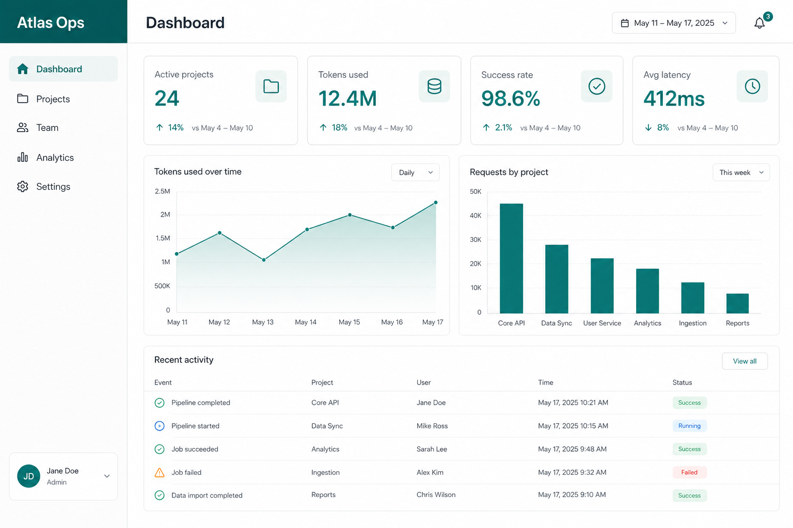

Portfolio demo
Atlas Ops
Fictional AI delivery ops dashboard — a personal demonstration SPA, not a live client product or the MSR Storage board.
My role: solo design and front-end build — React UI, routing, state, and demo data wiring.

Overview
Atlas Ops explores how a small delivery team might track projects, kanban status, people, and light analytics in one workspace. It ships as a static build under this portfolio domain with a public GitHub repository.
Implementation
- React with TypeScript, Vite bundling, and Tailwind utility styling.
- TanStack Query for async data reads; Zustand for local UI state where appropriate.
- Project CRUD, list view, and drag-and-drop kanban interactions.
- Team roles, permissions UI, activity feed, analytics charts, and settings/theme screens.
- Error boundaries, lazy-loaded routes, and keyboard-friendly controls on primary flows.
Verification
This is a demonstration — not a commercial deployment. Behaviour is exercised manually in the browser; there is no claim of production user counts or client outcomes. Compare with labelled programme WordPress demos for multisite publishing evidence.